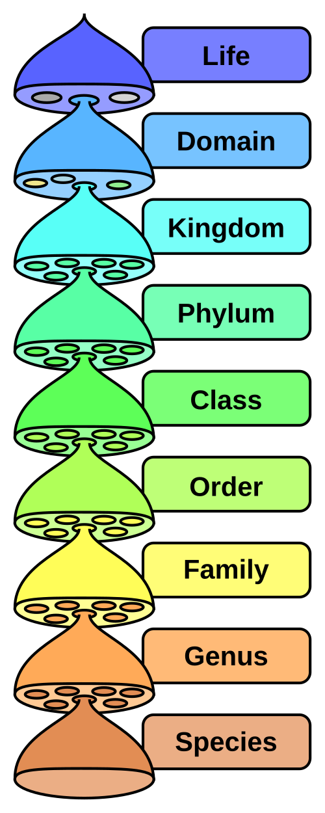

WikiPlant Contributors
About Our Contributors
WikiPlant allows people to share information about plants and contribute to plant biodiversity monitoring. Contributors can provide useful information about plants found in their local environment.
Students, plant enthusiasts, researchers and members of the community can contribute plant observations to help improve the information available on WikiPlant.
How to Become a Contributor
Contributors can follow these steps when submitting information about a plant:
- Observe a plant in a suitable location.
- Record the plant information.
- Take a clear photograph of the plant.
- Provide useful comments about the observation.
- Submit the information through the contribution form.
Contributor Guidelines
- Accurate Information
- Contributors should provide accurate information about the plant they observe.
- Clear Photograph
- Contributors should provide a clear photograph that can help with plant identification.
- Plant Information
- Contributors should provide useful information about the plant and its observation.
- Respect Nature
- Contributors should avoid damaging plants or disturbing their natural environment.
Plant Biodiversity Monitoring

Plant observations can provide useful information about plant diversity. Contributors can help collect information about different plants and their environments through WikiPlant.